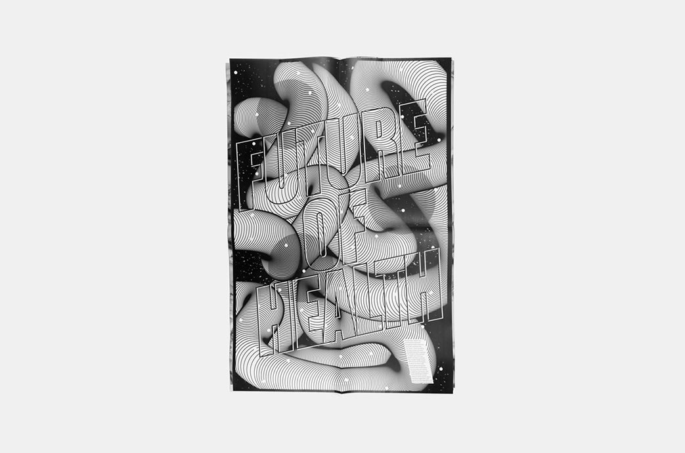
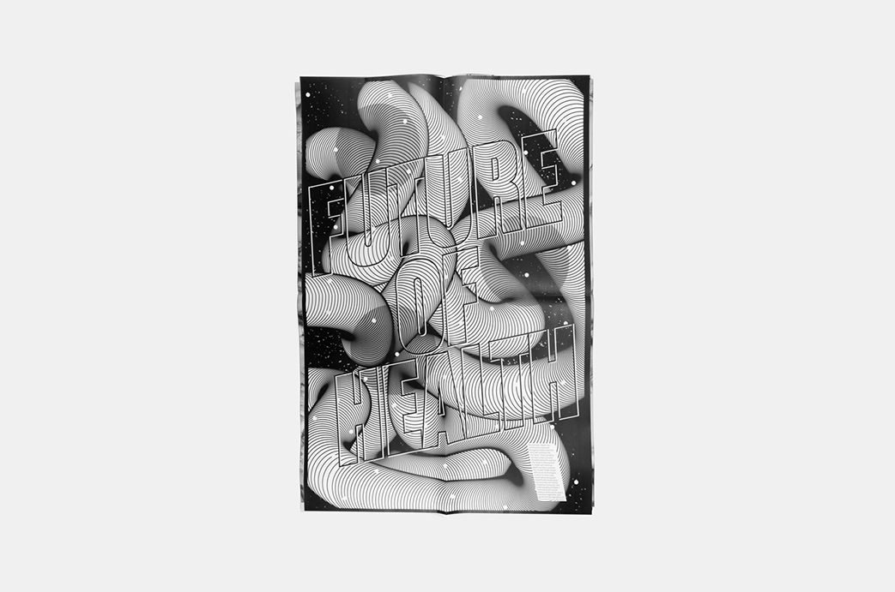
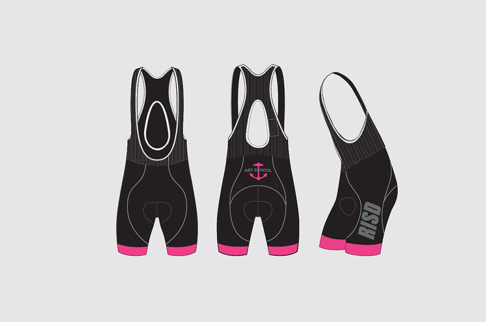
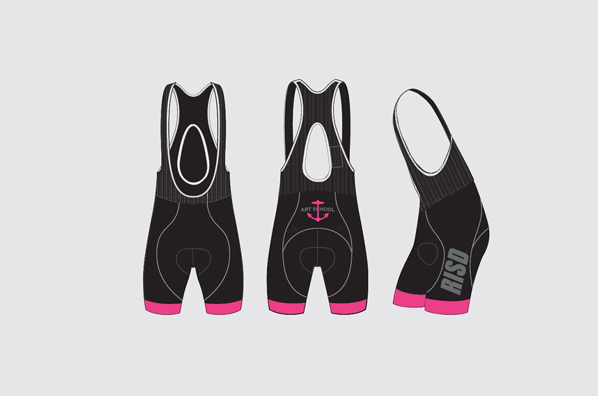

Health DP
Tshirt with graphics on them that can be worn when you have to put clothes on when you go out in society. Shirts are tshirt with graphics on them that can be worn when you have to put clothes on when you go out in society. View More →


Reformed
Tshirt with graphics on them that can be worn when you have to put clothes on when you go out in society. Shirts are tshirt with graphics on them that can be worn when you have to put clothes on when you go out in society. View More →

 



RISD Cycling
Tshirt with graphics on them that can be worn when you have to put clothes on when you go out in society. Shirts are tshirt with graphics on them that can be worn when you have to put clothes on when you go out in society. View More →


Squarespace
Tshirt with graphics on them that can be worn when you have to put clothes on when you go out in society. Shirts are tshirt with graphics on them that can be worn when you have to put clothes on when you go out in society. View More →


Strava
Tshirt with graphics on them that can be worn when you have to put clothes on when you go out in society. Shirts are tshirt with graphics on them that can be worn when you have to put clothes on when you go out in society. View More →